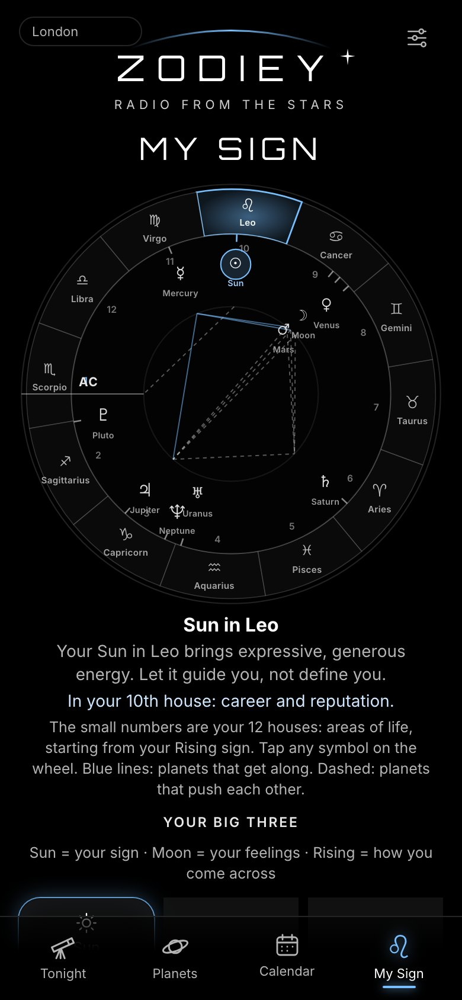
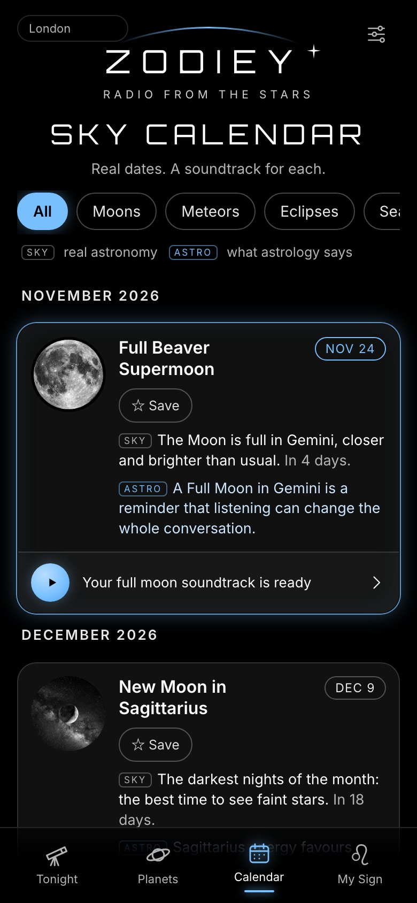

ZODIEY
RADIO FROM THE STARS
The astrology app with a soundtrack.
The real sky sets the mood. Your taste picks the sound. Every night, Zodiey finds a live radio station from somewhere in the world that fits your sign, tonight's Moon and the music you love.
How it works
Three things decide what you hear. None of them is a guess.
Calculated, not invented
Moon phases, eclipses, meteor showers and where every planet is tonight, worked out with real astronomy.
Only music you love
Tell Zodiey what you like. The sky changes the mood, never your genres: a calm night won't turn a metal fan's station into lounge.
A station for you
Your sign shapes the pick and the reason it gives: “Tonight’s bright Moon in fire sign Aries brings big energy, and you love electronic.”
What’s inside
Friendly astrology anyone can read, with real radio, TV and podcasts from around the world.
Tonight
The big sky moment, a live station picked for you, and a short daily reading. Pick a mood (lively, calm, focused) and it adapts.
The solar system, live
Spin the planets where they really are tonight. Play time forward, watch retrogrades happen, or see the sky the day you were born.

Your birth chart
Your Sun, Moon and Rising, a real chart wheel with houses, and every planet explained in plain words. Then hear it as a radio station.

Sky calendar
Full moons, eclipses, meteor showers and seasons with real dates, what astrology says about each, and a soundtrack for the moment.
Private by design
No account. No ads. No tracking. Your sign, birthday and stations stay on your phone.
Stays on your device
Everything you tell Zodiey is saved only on your iPhone or iPad. Delete it any time in Settings.
No sign-up
There’s nothing to register. Open the app, pick your sign and press play.
Read the details
Exactly what the app connects to, in plain words: our privacy policy.